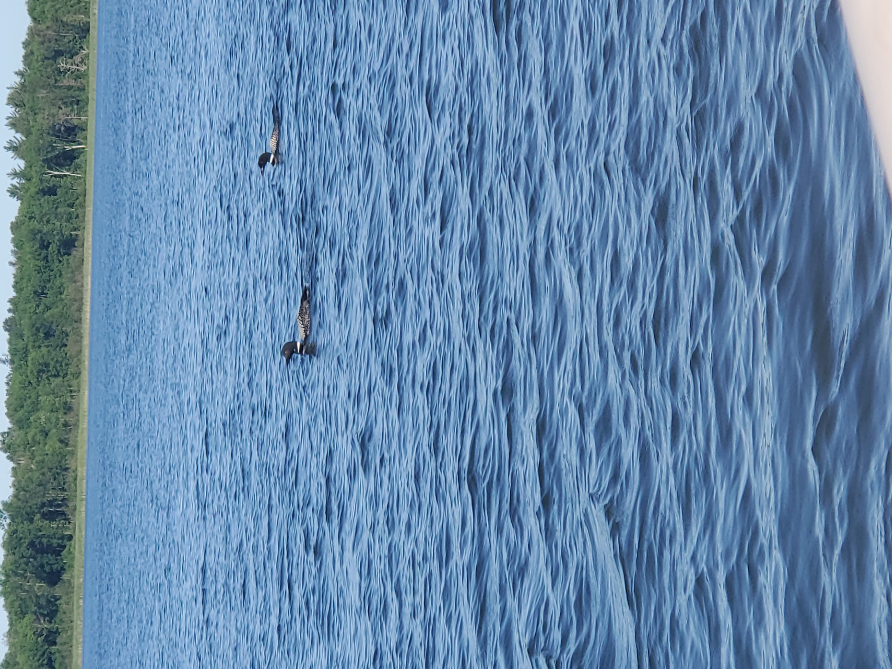

A 10 hour drive is a bit longer than I'd normally like to make, but renting a Winnebago makes the drive a whole lot easier. So we packed our bags and headed out to fish a lake none of us had heard of a few months prior in a town with a population under 300 people. The result was some of the best fishing I'd had in years! There were times where we'd anchor the boat and you couldn't cast anywhere without finding a fish of some kind. Plus, the view was beautiful, and I saw a good deal of loons, which are such pretty birds that we don't see often in the region.

We caught just about every kind of panfish you can find in the Midwest,
as well as pike and smallmouth bass. I caught a bowfin for the first
time, and although it is not considered the most desirable fish, I had
a lot of fun bringing it in.
It was a great trip, and soon I'll write a post about cleaning and
cooking the fish we caught.